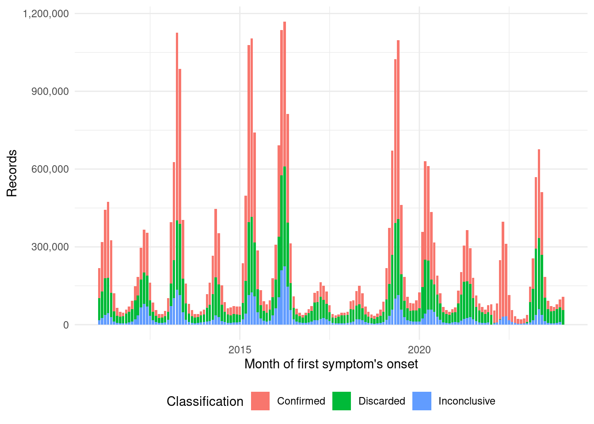

library(tidyverse)
library(arrow)
library(knitr)
library(lubridate)
source("../functions.R")Case classification analysis
This is a descriptive report about dengue case classification and criteria.
Packages
Execution node
node_name()[1] "dell"Load data
important_vars <- c("DT_SIN_PRI", "RESUL_SORO", "SOROTIPO", "CLASSI_FIN", "CRITERIO")
valid_interval <- interval(ymd("2011-01-01"), ymd("2021-12-31"))
dengue <- open_dataset(sources = file.path(c(data_dir(), "parquets/"))) %>%
select(all_of(important_vars)) %>%
collect() %>%
mutate(DT_SIN_PRI = ymd(DT_SIN_PRI)) %>%
filter(DT_SIN_PRI %within% valid_interval) %>%
filter(CLASSI_FIN != "6")Final classification and criteria
dengue %>%
group_by(CLASSI_FIN, CRITERIO) %>%
summarise(freq = n()) %>%
ungroup() %>%
kable(
format.args = list(big.mark = ".", decimal.mark = ",")
)`summarise()` has grouped output by 'CLASSI_FIN'. You can override using the
`.groups` argument.| CLASSI_FIN | CRITERIO | freq |
|---|---|---|
| Dengue | Clínico epidemiológico | 3.527.885 |
| Dengue | Em investigação | 62.457 |
| Dengue | Laboratório | 2.064.344 |
| Dengue | NA | 16 |
| Dengue clássico | Clínico epidemiológico | 1.439.136 |
| Dengue clássico | Em investigação | 16.796 |
| Dengue clássico | Laboratório | 880.966 |
| Dengue clássico | NA | 7 |
| Dengue com complicações | Clínico epidemiológico | 8.249 |
| Dengue com complicações | Em investigação | 595 |
| Dengue com complicações | Laboratório | 9.973 |
| Dengue com sinais de alarme | Clínico epidemiológico | 41.859 |
| Dengue com sinais de alarme | Em investigação | 2.079 |
| Dengue com sinais de alarme | Laboratório | 38.350 |
| Dengue grave | Clínico epidemiológico | 1.452 |
| Dengue grave | Em investigação | 447 |
| Dengue grave | Laboratório | 5.481 |
| Descartado | Clínico epidemiológico | 2.495.845 |
| Descartado | Em investigação | 9.383 |
| Descartado | Laboratório | 2.845.345 |
| Descartado | NA | 26 |
| Febre hemorrágica do dengue | Clínico epidemiológico | 2 |
| Febre hemorrágica do dengue | Em investigação | 230 |
| Febre hemorrágica do dengue | Laboratório | 5.041 |
| Inconclusivo | Clínico epidemiológico | 17.369 |
| Inconclusivo | Em investigação | 60.306 |
| Inconclusivo | Laboratório | 7.750 |
| Inconclusivo | NA | 1.909.736 |
| Síndrome do choque do dengue | Clínico epidemiológico | 5 |
| Síndrome do choque do dengue | Em investigação | 17 |
| Síndrome do choque do dengue | Laboratório | 273 |
dengue_classifications <- c("Febre hemorrágica do dengue", "Síndrome do choque do dengue", "Dengue com sinais de alarme",
"Dengue clássico", "Dengue com complicações", "Dengue",
"Dengue grave")dengue_cases_classification <- dengue %>%
mutate(CLASSI_FIN = case_when(
CLASSI_FIN %in% dengue_classifications ~ "Confirmed",
CLASSI_FIN == "Descartado" ~ "Discarded",
CLASSI_FIN == "Inconclusivo" ~ "Inconclusive",
CLASSI_FIN == 6 ~ "Invalid",
is.na(CLASSI_FIN) ~ "Missing",
.default = CLASSI_FIN
)) %>%
mutate(DT_SIN_PRI = lubridate::ceiling_date(x = DT_SIN_PRI, unit = "month")) %>%
group_by(DT_SIN_PRI, CLASSI_FIN) %>%
summarise(freq = n()) %>%
ungroup() `summarise()` has grouped output by 'DT_SIN_PRI'. You can override using the
`.groups` argument.write_parquet(x = dengue_cases_classification, sink =
file.path(c(data_dir(), "parquet_classification/dengue_cases_classification.parquet")))ggplot(data = dengue_cases_classification, aes(x = DT_SIN_PRI, weight = freq, fill = CLASSI_FIN)) +
geom_bar() +
scale_fill_hue(direction = 1) +
scale_y_continuous(labels = scales::comma) +
labs(fill = "Classificação") +
theme_minimal() +
theme(legend.position = "bottom") +
labs(x = "Month of first symptom's onset", y = "Records", fill = "Classification")
ggsave(filename = "dengue_cases_classification.pdf")Saving 7 x 5 in imageSorological examination
dengue %>%
filter(CLASSI_FIN %in% dengue_classifications) %>%
group_by(SOROTIPO) %>%
summarise(freq = n()) %>%
ungroup()# A tibble: 5 × 2
SOROTIPO freq
<chr> <int>
1 DEN 1 28619
2 DEN 2 16429
3 DEN 3 209
4 DEN 4 6122
5 <NA> 8054281Session info
sessionInfo()R version 4.1.2 (2021-11-01)
Platform: x86_64-pc-linux-gnu (64-bit)
Running under: Ubuntu 22.04.2 LTS
Matrix products: default
BLAS: /usr/lib/x86_64-linux-gnu/blas/libblas.so.3.10.0
LAPACK: /usr/lib/x86_64-linux-gnu/lapack/liblapack.so.3.10.0
locale:
[1] LC_CTYPE=pt_BR.UTF-8 LC_NUMERIC=C
[3] LC_TIME=en_US.UTF-8 LC_COLLATE=en_US.UTF-8
[5] LC_MONETARY=en_US.UTF-8 LC_MESSAGES=en_US.UTF-8
[7] LC_PAPER=en_US.UTF-8 LC_NAME=C
[9] LC_ADDRESS=C LC_TELEPHONE=C
[11] LC_MEASUREMENT=en_US.UTF-8 LC_IDENTIFICATION=C
attached base packages:
[1] stats graphics grDevices utils datasets methods base
other attached packages:
[1] knitr_1.43 arrow_12.0.1.1 lubridate_1.9.2 forcats_1.0.0
[5] stringr_1.5.0 dplyr_1.1.2 purrr_1.0.1 readr_2.1.4
[9] tidyr_1.3.0 tibble_3.2.1 ggplot2_3.4.2 tidyverse_2.0.0
loaded via a namespace (and not attached):
[1] compiler_4.1.2 pillar_1.9.0 tools_4.1.2 bit_4.0.5
[5] digest_0.6.33 timechange_0.2.0 jsonlite_1.8.7 evaluate_0.21
[9] lifecycle_1.0.3 gtable_0.3.3 pkgconfig_2.0.3 rlang_1.1.1
[13] cli_3.6.1 rstudioapi_0.15.0 yaml_2.3.7 xfun_0.39
[17] fastmap_1.1.1 withr_2.5.0 systemfonts_1.0.4 generics_0.1.3
[21] vctrs_0.6.3 htmlwidgets_1.6.2 hms_1.1.3 bit64_4.0.5
[25] grid_4.1.2 tidyselect_1.2.0 glue_1.6.2 R6_2.5.1
[29] textshaping_0.3.6 fansi_1.0.4 rmarkdown_2.23 farver_2.1.1
[33] tzdb_0.4.0 magrittr_2.0.3 scales_1.2.1 htmltools_0.5.5
[37] assertthat_0.2.1 colorspace_2.1-0 ragg_1.2.5 labeling_0.4.2
[41] utf8_1.2.3 stringi_1.7.12 munsell_0.5.0